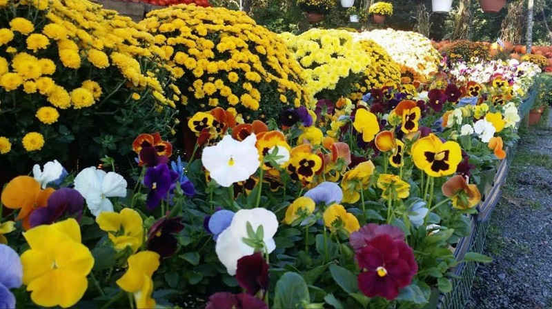

Celebrate Fall!
It's October and we're decorating for fall!
Nothing says 'Fall' quite like piles of pumpkins, masses of mums, and pots of pansies. We have all of that and more for your decor and winter garden color.
We have orange pumpkins and those special white pumpkins that seem to take Fall decor up a notch. Whether you want to carve your pumpkins, decorate them with paint and markers, or just enjoy their natural beauty, we have what you need.
Now is the time to plant mums or scatter pots of mums around your porch, your deck, or your yard. Mums provide beautiful fall color and structure to your garden areas.
It's also time to plant winter pansies! These hardy plants will add color to your yard through the winter and into the spring. Plant soon for color that will last for months.
We have pumpkins, pansies, mums, and lots of great fall produce. Come see us for all of your fall yard decorations.
Keep in Touch
Would you like to receive mail from Heather Hill Gardens? Click here to send us your name and e-mail and we'll add you to our list.